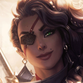
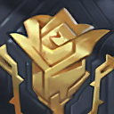
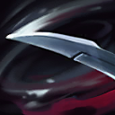
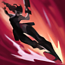

起手裝備
 長劍
長劍

蒐集者後先無盡、多明尼克，再補嗜血與不朽盾弓；盾弓提供進場保護，對魔法爆發換魔提斯時必須替換盾弓避免重複生命線。 長劍起手保留；五成裝與獨立二、三級鞋線已分開，未照抄外站 Galeforce 鞋附魔欄。


五件成裝與鞋子分開列示；起手與核心是購買路線，不是額外佔用的成裝欄位。鞋子完成時機仍依對線壓力與回城金錢調整。


主系改即刻衝擊、傲慢、眼球收集器，副系血脈，配征服者支援進場與擊殺續戰；依站內中文名把 Hubris 對應 arrogance，不使用不存在的 hubris ID。

預設閃現＋光盾，保住煞蜜拉第一輪輸出；光盾配合二技撐到風格達 S，不能解除控制。
加點優先：Q > E > W
Q > E > W：一技短冷卻交替普攻，三技次滿支援突進；大絕必須先達 S 風格。

交替使用不同普攻或技能命中英雄可提高風格評級；近距離普攻附加魔法傷害，並可衝向受到硬控或擊飛的敵人接續攻擊。
有後續版本調整的項目以較新數值為準；未列出者不代表完整技能成長表。
有後續版本調整的項目以較新數值為準；未列出者不代表完整技能成長表。
遠距射擊、近距改為斬擊，也可在突進中施放；可暴擊，但無法觸發普攻吸血。
有後續版本調整的項目以較新數值為準；未列出者不代表完整技能成長表。
有後續版本調整的項目以較新數值為準；未列出者不代表完整技能成長表。

旋轉刀刃攻擊附近敵人兩次，並摧毀進入範圍的敵方飛行道具，是疊風格與進場保命的關鍵技能。
有後續版本調整的項目以較新數值為準；未列出者不代表完整技能成長表。

穿越敵方單位造成魔法傷害並提高攻速，途中可接一技；參與擊殺英雄會重置冷卻，用於進場與連續收割。
有後續版本調整的項目以較新數值為準；未列出者不代表完整技能成長表。
風格 S 級才可施放，持續攻擊附近敵人，可暴擊並以部分效率觸發普攻吸血；硬控仍能中斷。
有後續版本調整的項目以較新數值為準；未列出者不代表完整技能成長表。
有後續版本調整的項目以較新數值為準；未列出者不代表完整技能成長表。
三技只能選敵方有效目標穿越，不能跳友軍撤退；兩段二技與其他攻擊交替才可能繼續堆風格，不能把固定短序列當作保證 S。
普攻起手 → 1技射擊 → 2技雙段斬擊 → 再接普攻 → 3技穿越有效敵方目標
普攻與不同技能交替提高風格，二技優先擋關鍵飛行道具；三技僅能以敵方有效單位為目標，不能跳友軍撤退。這是短換血示意，不保證從零直接達 S。
被動接硬控 → 近距普攻 → 1技近戰斬擊 → 3技穿越 → 2技補風格並防護 → S級施放4技
隊友硬控命中後用被動靠近，再以不同技能快速累積風格。確定敵方主要硬控已交或被二技擋掉後，才施放大絕。 依目前風格與實際交替命中確認 S 級；若不足需補普攻或一技，不能無條件按出大絕。
4技壓低多人 → 3技追殘血 → 突進途中接1技 → 普攻完成擊殺 → 擊殺重置再突進 → 第二次收割
參與擊殺會重置三技。第一個目標倒下後先確認下一個落點是否安全，再利用重置切換目標，不要因連跳直接進入敵方完整控制鏈。
同一種攻擊連續命中不會提高風格；必須在普攻、一技、二技、三技之間交替，才能從 E 級提升到 S 級。
地獄火狂襲只能在 S 級施放且會被硬控中斷，開大前要先確認敵方控場技能與自身退路。
以普攻與一技交替做短換血，配合隊友硬控觸發被動接近目標。沒有隊友先手或敵方關鍵控制尚未交出時，不要只為提高風格直接三技進場；二技要優先用來擋掉關鍵飛行道具，而不是單純補傷害。
蒐集者、無盡後先補多明尼克，再以嗜血與盾弓增加進場續戰。等隊友硬控和敵方打斷技能交出，交替普攻與技能到 S 級再開大；三技撤離必須有安全的敵方可選目標，不能跳回友軍。
煞蜜拉不是第一個進場的人，應等待敵方控制與保命技能被逼出，再利用被動或三技進入收割距離。大絕遭硬控會被中斷，因此開啟前要確認主要控場位置；取得擊殺或助攻後利用三技重置換目標，必要時以光盾、二技和閃現保住連殺節奏。
吉茵珂絲和尤娜拉能從外圍持續輸出，剎雅可倒鉤與大絕反開；二技擋的是飛行道具，不是所有控制，進場前辨認敵方打斷手段。 威脅名單採同分路指南，較有利名單保留機制判斷並移除與威脅名單重疊者；現有輔助組合逐項複核技能互動後保留。
對局名單是機制與分路判斷，不代表固定勝率；需同時看雙方熟練度、兵線與陣容。
吉茵珂絲和尤娜拉能從外圍持續輸出，剎雅可倒鉤與大絕反開；二技擋的是飛行道具，不是所有控制，進場前辨認敵方打斷手段。
下列輔助配合以技能互動為依據。銳兒、納帝魯斯、亞歷斯塔仍可配合本頁打法；先確認對手輔助的控制與兩邊召喚師技能，單一射手對局不代表必勝。
範圍擊飛與聚怪能觸發接控，讓煞蜜拉更容易接近後自行交替攻擊堆風格。
穩定硬控能觸發煞蜜拉被動突進，適合單點快速擊殺。
二一連段與大絕坦度能提供長時間近身空間，方便煞蜜拉收割。
依煞蜜拉的交替技能、暴擊普攻與近身大絕路線選擇替換；先看實際死亡與傷害不足原因。
依敵方前排成形調整
觸發：敵方前排已形成高生命或高防禦，正面輸出受阻。
傳奇：血脈 → 斷切
對方前排血量高，且裝備吸血足以支援續戰。
保留征服主系三列，副系由血脈換斷切；斷切只提高高血量目標的普攻傷害。
先保留預設穿甲核心，單一裝備格的調整不代表重買另一套。
保命格可提早
觸發：被同一輪突進秒殺，無法打出主要技能與普攻。
不朽盾弓 → 守護天使
主要死亡原因是刺客或突進一次切入，且隊友能掩護復活位置。
不朽盾弓整格換守護天使，犧牲部分交替技能、暴擊普攻與近身大絕或持續防禦；復活後無人接應時先改善站位。
不朽盾弓 → 魔提斯深淵
敵方主要擊殺來源是魔法爆發，且尚未裝另一件生命線裝備。
魔提斯替換不朽盾弓，不與盾弓同時保留重複生命線；嗜血者維持吸血。
復活與魔法生命線處理的傷害不同，按實際威脅擇一；盾弓與魔提斯不重複保留。
先判斷控制能否解除
觸發：可解除的禁錮、暈眩等控制反覆中斷輸出。
不朽盾弓 → 水星彎刀
可解除的控制反覆讓自己無法輸出，且閃現不能解決。
以不朽盾弓換水星彎刀；主動要手動使用，不能解除擊飛或擊退，也不是舊版附魔。
水星彎刀是成裝，不佔鞋子升級；擊飛、擊退須靠預先走位或隊友保護。
治療已影響集火時
觸發：敵方持續治療抵銷集火，且團隊缺乏穩定重創。
多明尼克的問候 → 致死宣告
敵方治療或吸血持續影響勝負，隊友無法穩定施加重創。
致死宣告替換多明尼克；保留暴擊、穿甲與重創，不並排買兩件。
需要時先用死刑宣告過渡；不要把所有敵方英雄都當成必出重創的理由。
團隊無其他反盾者才承擔
觸發：大量反覆護盾持續阻止集火，且自己能穩定命中目標。
不朽盾弓 → 巨蛇鋒牙
隊友無法施加反盾，且護盾確實抵銷主要輸出。
不朽盾弓換巨蛇鋒牙會犧牲原末段功能；煞蜜拉仍需保留主要輸出核心，只有單一小護盾時不換。
反盾屬團隊分工，不為一個小盾放棄整條普攻或技能路線。
7.3c差異核對：7.3c直接平衡項目屬符文大亂鬥；本頁保留已核對的峽谷配置。版本更新不等於每位英雄都必須更換Tier或裝備。查看整輪校正範圍。
本頁校正版本：7.3c；校正日期：2026-10-25。
參考來源標示版本：7.3c
本輪核對官方版本差異、道具/符文引用、五成裝與鞋線、逐級加點及情境替換一致性。Tier及玩法屬本站編輯判斷，不是官方排名或台服勝率；未公開的全級技能表不推算。
評級理由：7.3c 維持 S（本站判斷）。同分路參考維持 S；硬控隊友配合下有收割能力，但需要先等敵方打斷技能，不能作無條件第一手強開。 7.3c 未改動此分路的英雄數值，沒有新證據只因版本號而升降。
Riot 官方資料 ↗ · Riot 官方資料 ↗ · Riot 官方資料 ↗ · Riot 官方資料 ↗ · Riot 官方資料 ↗ · WildRiftFire 參考攻略 ↗
7.3c 的直接英雄倍率改動屬符文大亂鬥；本召喚峽谷配置承接 7.3b。未把模式專屬增削轉為峽谷增削。
五件成裝、獨立鞋線、起手、核心、情境替換引用與一般符文列別均重新檢查；移除裝備不列入當前推薦。
歷史資料有後續調整時，以較新版本數值為準。
| 項目 | 調整前 | 調整後 |
|---|---|---|
| 每級生命 | 128 | 136 |
| 每級物防 | 5 | 5.5 |
| 每級魔防 | 1.4 | 2 |
| 項目 | 調整前 | 調整後 |
|---|---|---|
| 近戰最低物攻係數 | 3.5%–10.5%（隨等級） | 5.8%–17%（隨等級） |
| 近戰最高物攻係數 | 7%–21%（隨等級） | 11.6%–34%（隨等級） |
| 項目 | 調整前 | 調整後 |
|---|---|---|
| 物攻係數 | 110% | 125% |
| 項目 | 調整前 | 調整後 |
|---|---|---|
| 每次射擊物攻係數 | 40% | 50% |
歷史資料有後續調整時，以較新版本數值為準。
| 項目 | 調整前 | 調整後 |
|---|---|---|
| 基礎物攻 | 62 | 60 |
| 每級物攻 | 4 | 3.5 |
| 項目 | 調整前 | 調整後 |
|---|---|---|
| 每級風格評等跑速加成 | 4% | 3% / 3.25% / 3.5% / 3.75% / 4%（取決於等級） |
| 項目 | 調整前 | 調整後 |
|---|---|---|
| 傷害 | 15 / 20 / 25 / 30 + 100 / 115 / 130 / 145%物攻 | 15 / 20 / 25 / 30 + 110%物攻 |
| 暴擊傷害 | 目前暴擊傷害 - 50% | 150% - 165%（取決於暴擊傷害） |
| 一技普攻吸血 | — | 無法觸發普攻吸血 |
| 項目 | 調整前 | 調整後 |
|---|---|---|
| 額外物攻係數 | 80% | 50% |
| 項目 | 調整前 | 調整後 |
|---|---|---|
| 攻速 | 35% / 40% / 45% / 50% | 25% / 30% / 35% / 40% |
| 項目 | 調整前 | 調整後 |
|---|---|---|
| 冷卻時間 | 8 / 8 / 8 | 6 / 6 / 6 |
| 魔力消耗 | 60 / 30 / 0 | 0 / 0 / 0 |
| 傷害 | 5 / 20 / 35 + 60%物攻 | 20 / 40 / 60 + 40%物攻 |
| 大絕普攻吸血 | — | 以 66.7% 效率觸發 |